Unified depiction comparison
Una tarjeta por molécula y una columna por motor. CDK genera SVG desde Java. SmilesDrawer se dibuja en el navegador usando el mismo SMILES. OpenBabel se genera si existe el comando obabel en PATH. RDKit e Indigo se generan si existe Python con sus librerías instaladas.
Water
H2OCOVALENTE_SIMPLE
CDK
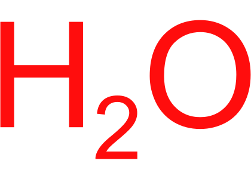
OSMILES compacto: los motores añaden H implícitos; puede verse demasiado simple o grande.
SmilesDrawer
ORender JS desde el mismo SMILES usado por CDK.
OpenBabel
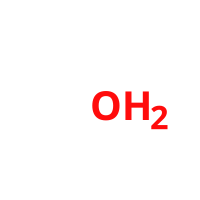
OSVG generado con obabel --gen2d desde el mismo SMILES.
RDKit

OSVG generado por Python/RDKit desde el mismo SMILES.
Indigo

OSVG generado por Python/Indigo desde el mismo SMILES.
Water explicit
H2OCOVALENTE_SIMPLE
CDK
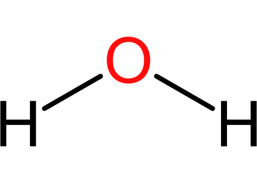
[H]O[H]Comparar con Water compacto. Debería parecerse más a estructura real.
SmilesDrawer
[H]O[H]Render JS desde el mismo SMILES usado por CDK.
OpenBabel
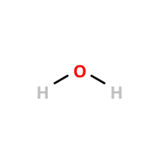
[H]O[H]SVG generado con obabel --gen2d desde el mismo SMILES.
RDKit
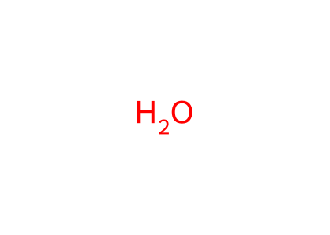
[H]O[H]SVG generado por Python/RDKit desde el mismo SMILES.
Indigo
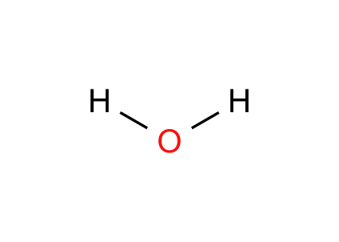
[H]O[H]SVG generado por Python/Indigo desde el mismo SMILES.
Ammonia
NH3COVALENTE_SIMPLE
CDK
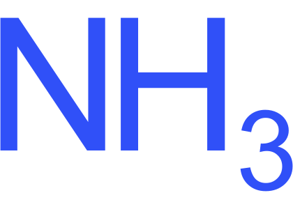
NSMILES compacto: los motores añaden H implícitos.
SmilesDrawer
NRender JS desde el mismo SMILES usado por CDK.
OpenBabel
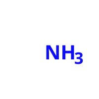
NSVG generado con obabel --gen2d desde el mismo SMILES.
RDKit
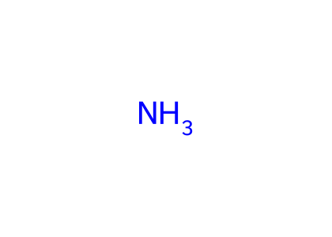
NSVG generado por Python/RDKit desde el mismo SMILES.
Indigo

NSVG generado por Python/Indigo desde el mismo SMILES.
Ammonia explicit
NH3COVALENTE_SIMPLE
CDK
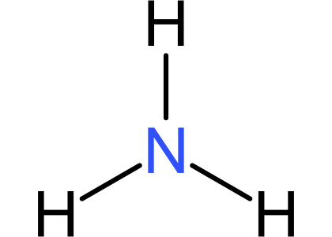
[H]N([H])[H]Comparar con Ammonia compacto.
SmilesDrawer
[H]N([H])[H]Render JS desde el mismo SMILES usado por CDK.
OpenBabel
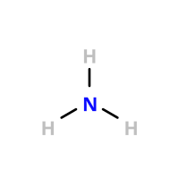
[H]N([H])[H]SVG generado con obabel --gen2d desde el mismo SMILES.
RDKit

[H]N([H])[H]SVG generado por Python/RDKit desde el mismo SMILES.
Indigo
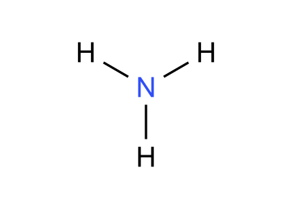
[H]N([H])[H]SVG generado por Python/Indigo desde el mismo SMILES.
Hydrogen peroxide
H2O2COVALENTE_SIMPLE
CDK
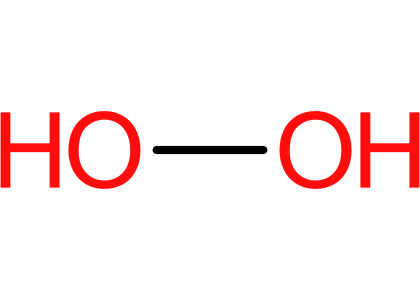
OOAceptable, pero conviene comparar con explícito.
SmilesDrawer
OORender JS desde el mismo SMILES usado por CDK.
OpenBabel
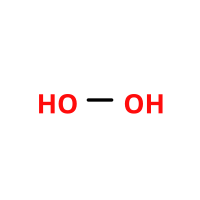
OOSVG generado con obabel --gen2d desde el mismo SMILES.
RDKit

OOSVG generado por Python/RDKit desde el mismo SMILES.
Indigo
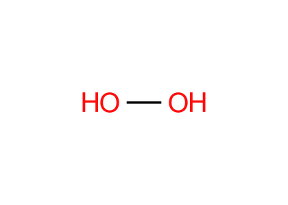
OOSVG generado por Python/Indigo desde el mismo SMILES.
Hydrogen peroxide explicit
H2O2COVALENTE_SIMPLE
CDK
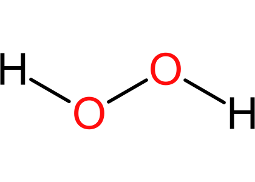
[H]OO[H]Versión con hidrógenos explícitos.
SmilesDrawer
[H]OO[H]Render JS desde el mismo SMILES usado por CDK.
OpenBabel
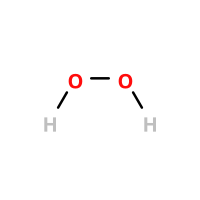
[H]OO[H]SVG generado con obabel --gen2d desde el mismo SMILES.
RDKit
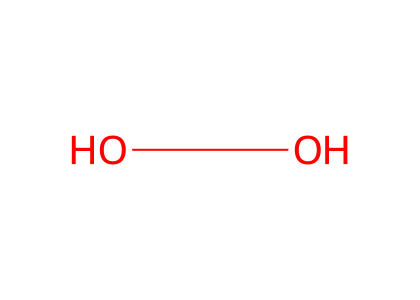
[H]OO[H]SVG generado por Python/RDKit desde el mismo SMILES.
Indigo
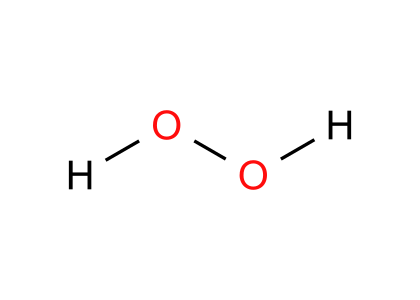
[H]OO[H]SVG generado por Python/Indigo desde el mismo SMILES.
Carbon dioxide
CO2OXIDO_COVALENTE
CDK
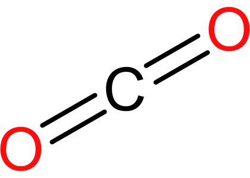
O=C=OBien. Lineal y reconocible.
SmilesDrawer
O=C=ORender JS desde el mismo SMILES usado por CDK.
OpenBabel
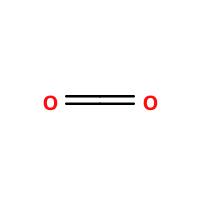
O=C=OSVG generado con obabel --gen2d desde el mismo SMILES.
RDKit
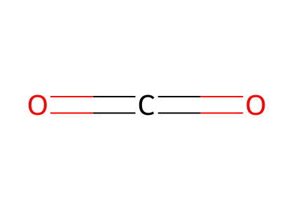
O=C=OSVG generado por Python/RDKit desde el mismo SMILES.
Indigo

O=C=OSVG generado por Python/Indigo desde el mismo SMILES.
Carbon monoxide
COOXIDO_COVALENTE
CDK
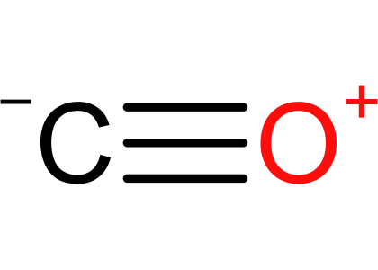
[C-]#[O+]Bien químicamente, pero las cargas pueden verse raras para nivel educativo.
SmilesDrawer
[C-]#[O+]Render JS desde el mismo SMILES usado por CDK.
OpenBabel
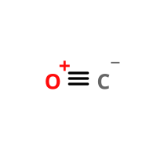
[C-]#[O+]SVG generado con obabel --gen2d desde el mismo SMILES.
RDKit
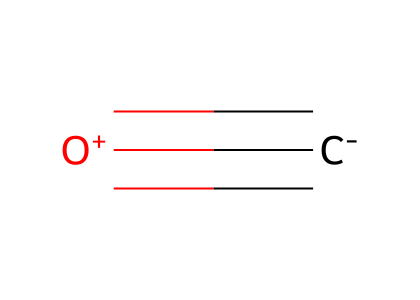
[C-]#[O+]SVG generado por Python/RDKit desde el mismo SMILES.
Indigo
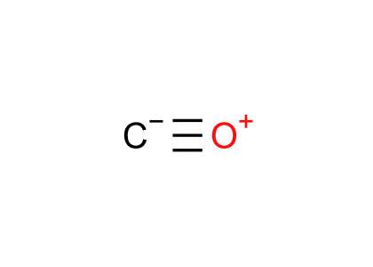
[C-]#[O+]SVG generado por Python/Indigo desde el mismo SMILES.
Sulfur dioxide
SO2OXIDO_COVALENTE
CDK
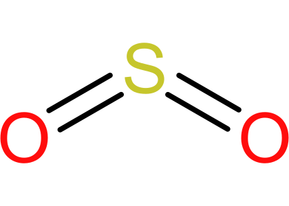
O=S=OBastante bien.
SmilesDrawer
O=S=ORender JS desde el mismo SMILES usado por CDK.
OpenBabel
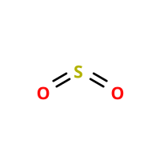
O=S=OSVG generado con obabel --gen2d desde el mismo SMILES.
RDKit
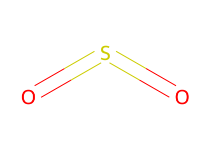
O=S=OSVG generado por Python/RDKit desde el mismo SMILES.
Indigo
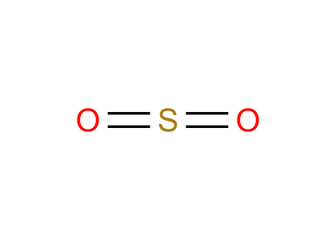
O=S=OSVG generado por Python/Indigo desde el mismo SMILES.
Sulfur trioxide
SO3OXIDO_COVALENTE
CDK
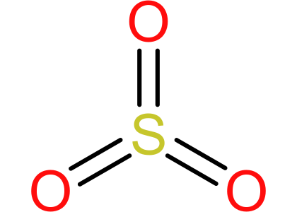
O=S(=O)=OBastante bien.
SmilesDrawer
O=S(=O)=ORender JS desde el mismo SMILES usado por CDK.
OpenBabel
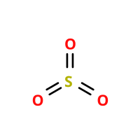
O=S(=O)=OSVG generado con obabel --gen2d desde el mismo SMILES.
RDKit
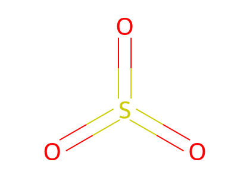
O=S(=O)=OSVG generado por Python/RDKit desde el mismo SMILES.
Indigo
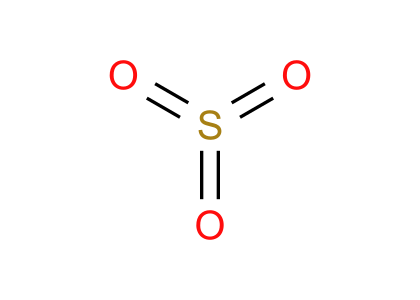
O=S(=O)=OSVG generado por Python/Indigo desde el mismo SMILES.
Nitric oxide
NOOXIDO_COVALENTE
CDK
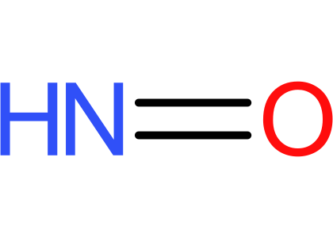
N=OAceptable.
SmilesDrawer
N=ORender JS desde el mismo SMILES usado por CDK.
OpenBabel
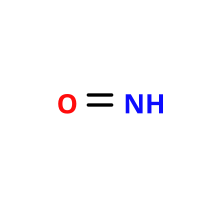
N=OSVG generado con obabel --gen2d desde el mismo SMILES.
RDKit
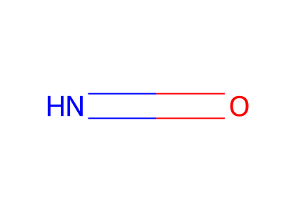
N=OSVG generado por Python/RDKit desde el mismo SMILES.
Indigo
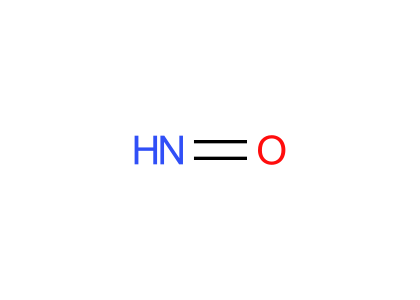
N=OSVG generado por Python/Indigo desde el mismo SMILES.
Nitrogen dioxide
NO2OXIDO_COVALENTE
CDK
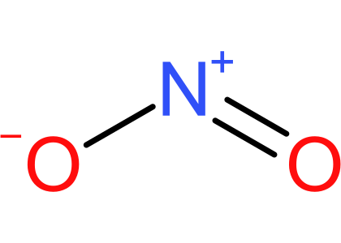
O=[N+][O-]Bien, aunque muestra cargas formales.
SmilesDrawer
O=[N+][O-]Render JS desde el mismo SMILES usado por CDK.
OpenBabel
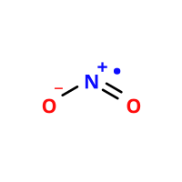
O=[N+][O-]SVG generado con obabel --gen2d desde el mismo SMILES.
RDKit
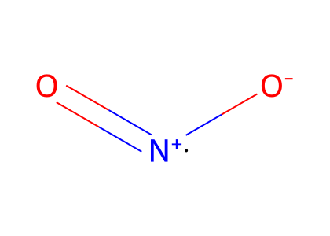
O=[N+][O-]SVG generado por Python/RDKit desde el mismo SMILES.
Indigo
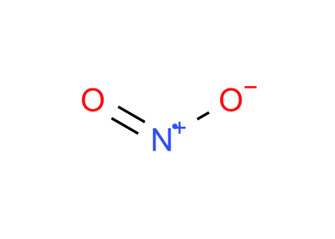
O=[N+][O-]SVG generado por Python/Indigo desde el mismo SMILES.
Dinitrogen monoxide
N2OOXIDO_COVALENTE
CDK
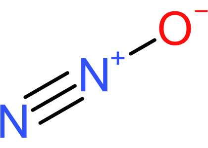
N#[N+][O-]Bien, aunque muestra cargas formales.
SmilesDrawer
N#[N+][O-]Render JS desde el mismo SMILES usado por CDK.
OpenBabel
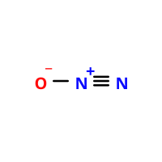
N#[N+][O-]SVG generado con obabel --gen2d desde el mismo SMILES.
RDKit
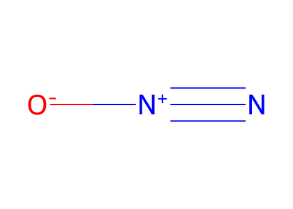
N#[N+][O-]SVG generado por Python/RDKit desde el mismo SMILES.
Indigo
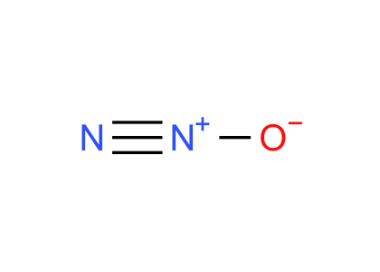
N#[N+][O-]SVG generado por Python/Indigo desde el mismo SMILES.
Ozone
O3COVALENTE_SIMPLE
CDK
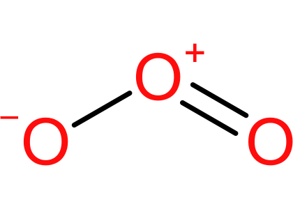
O=[O+][O-]Bien, aunque muestra cargas formales.
SmilesDrawer
O=[O+][O-]Render JS desde el mismo SMILES usado por CDK.
OpenBabel
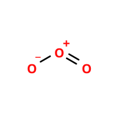
O=[O+][O-]SVG generado con obabel --gen2d desde el mismo SMILES.
RDKit
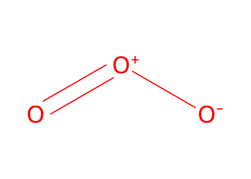
O=[O+][O-]SVG generado por Python/RDKit desde el mismo SMILES.
Indigo
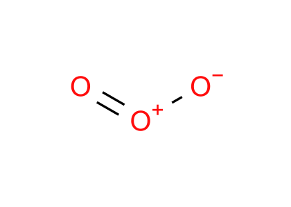
O=[O+][O-]SVG generado por Python/Indigo desde el mismo SMILES.
Hydrogen cyanide
HCNCOVALENTE_SIMPLE
CDK
C#NLos H pueden quedar implícitos; probar también explícito.
SmilesDrawer
C#NRender JS desde el mismo SMILES usado por CDK.
OpenBabel
C#NSVG generado con obabel --gen2d desde el mismo SMILES.
RDKit

C#NSVG generado por Python/RDKit desde el mismo SMILES.
Indigo
C#NSVG generado por Python/Indigo desde el mismo SMILES.
Hydrogen cyanide explicit
HCNCOVALENTE_SIMPLE
CDK
[H]C#NMás claro para la app.
SmilesDrawer
[H]C#NRender JS desde el mismo SMILES usado por CDK.
OpenBabel
[H]C#NSVG generado con obabel --gen2d desde el mismo SMILES.
RDKit
[H]C#NSVG generado por Python/RDKit desde el mismo SMILES.
Indigo
[H]C#NSVG generado por Python/Indigo desde el mismo SMILES.
Hydrochloric acid
HClHIDRACIDO
CDK
ClCompacto queda como cloro con H implícito.
SmilesDrawer
ClRender JS desde el mismo SMILES usado por CDK.
OpenBabel
ClSVG generado con obabel --gen2d desde el mismo SMILES.
RDKit
ClSVG generado por Python/RDKit desde el mismo SMILES.
Indigo
ClSVG generado por Python/Indigo desde el mismo SMILES.
Hydrochloric acid explicit
HClHIDRACIDO
CDK
[H]ClMás correcto para mostrar enlace H-Cl.
SmilesDrawer
[H]ClRender JS desde el mismo SMILES usado por CDK.
OpenBabel
[H]ClSVG generado con obabel --gen2d desde el mismo SMILES.
RDKit

[H]ClSVG generado por Python/RDKit desde el mismo SMILES.
Indigo
[H]ClSVG generado por Python/Indigo desde el mismo SMILES.
Nitric acid
HNO3OXOACIDO
CDK
O[N+](=O)[O-]Bastante bien. Estilo parecido a PubChem.
SmilesDrawer
O[N+](=O)[O-]Render JS desde el mismo SMILES usado por CDK.
OpenBabel
O[N+](=O)[O-]SVG generado con obabel --gen2d desde el mismo SMILES.
RDKit
O[N+](=O)[O-]SVG generado por Python/RDKit desde el mismo SMILES.
Indigo
O[N+](=O)[O-]SVG generado por Python/Indigo desde el mismo SMILES.
Sulfuric acid
H2SO4OXOACIDO
SmilesDrawer
OS(=O)(=O)ORender JS desde el mismo SMILES usado por CDK.
OpenBabel
OS(=O)(=O)OSVG generado con obabel --gen2d desde el mismo SMILES.
RDKit
OS(=O)(=O)OSVG generado por Python/RDKit desde el mismo SMILES.
Indigo
OS(=O)(=O)OSVG generado por Python/Indigo desde el mismo SMILES.
Phosphoric acid
H3PO4OXOACIDO
SmilesDrawer
OP(=O)(O)ORender JS desde el mismo SMILES usado por CDK.
OpenBabel

OP(=O)(O)OSVG generado con obabel --gen2d desde el mismo SMILES.
RDKit
OP(=O)(O)OSVG generado por Python/RDKit desde el mismo SMILES.
Indigo
OP(=O)(O)OSVG generado por Python/Indigo desde el mismo SMILES.
Carbonic acid
H2CO3OXOACIDO
CDK
OC(=O)OMuy buen candidato para motor 2D automático.
SmilesDrawer
OC(=O)ORender JS desde el mismo SMILES usado por CDK.
OpenBabel
OC(=O)OSVG generado con obabel --gen2d desde el mismo SMILES.
RDKit
OC(=O)OSVG generado por Python/RDKit desde el mismo SMILES.
Indigo
OC(=O)OSVG generado por Python/Indigo desde el mismo SMILES.
Sodium chloride
NaClSAL_BINARIA
CDK
[Na+].[Cl-]Visualmente claro, aunque no representa red cristalina.
SmilesDrawer
[Na+].[Cl-]Render JS desde el mismo SMILES usado por CDK.
OpenBabel

[Na+].[Cl-]SVG generado con obabel --gen2d desde el mismo SMILES.
RDKit
[Na+].[Cl-]SVG generado por Python/RDKit desde el mismo SMILES.
Indigo
[Na+].[Cl-]SVG generado por Python/Indigo desde el mismo SMILES.
Potassium chloride
KClSAL_BINARIA
CDK
[K+].[Cl-]Visualmente claro, aunque no representa red cristalina.
SmilesDrawer
[K+].[Cl-]Render JS desde el mismo SMILES usado por CDK.
OpenBabel

[K+].[Cl-]SVG generado con obabel --gen2d desde el mismo SMILES.
RDKit
[K+].[Cl-]SVG generado por Python/RDKit desde el mismo SMILES.
Indigo
[K+].[Cl-]SVG generado por Python/Indigo desde el mismo SMILES.
Calcium chloride
CaCl2SAL_BINARIA
CDK
[Ca+2].[Cl-].[Cl-]Aceptable, pero la colocación puede ser irregular.
SmilesDrawer
[Ca+2].[Cl-].[Cl-]Render JS desde el mismo SMILES usado por CDK.
OpenBabel
[Ca+2].[Cl-].[Cl-]SVG generado con obabel --gen2d desde el mismo SMILES.
RDKit
[Ca+2].[Cl-].[Cl-]SVG generado por Python/RDKit desde el mismo SMILES.
Indigo
[Ca+2].[Cl-].[Cl-]SVG generado por Python/Indigo desde el mismo SMILES.
Sodium hydroxide
NaOHHIDROXIDO
SmilesDrawer
[Na+].[OH-]Render JS desde el mismo SMILES usado por CDK.
OpenBabel

[Na+].[OH-]SVG generado con obabel --gen2d desde el mismo SMILES.
RDKit
[Na+].[OH-]SVG generado por Python/RDKit desde el mismo SMILES.
Indigo
[Na+].[OH-]SVG generado por Python/Indigo desde el mismo SMILES.
Calcium hydroxide
Ca(OH)2HIDROXIDO
CDK
[Ca+2].[OH-].[OH-]Aceptable, pero la colocación puede ser irregular.
SmilesDrawer
[Ca+2].[OH-].[OH-]Render JS desde el mismo SMILES usado por CDK.
OpenBabel
[Ca+2].[OH-].[OH-]SVG generado con obabel --gen2d desde el mismo SMILES.
RDKit
[Ca+2].[OH-].[OH-]SVG generado por Python/RDKit desde el mismo SMILES.
Indigo
[Ca+2].[OH-].[OH-]SVG generado por Python/Indigo desde el mismo SMILES.
Sodium carbonate
Na2CO3OXISAL
CDK
[Na+].[Na+].[O-]C(=O)[O-]Bastante claro.
SmilesDrawer
[Na+].[Na+].[O-]C(=O)[O-]Render JS desde el mismo SMILES usado por CDK.
OpenBabel
[Na+].[Na+].[O-]C(=O)[O-]SVG generado con obabel --gen2d desde el mismo SMILES.
RDKit
[Na+].[Na+].[O-]C(=O)[O-]SVG generado por Python/RDKit desde el mismo SMILES.
Indigo
[Na+].[Na+].[O-]C(=O)[O-]SVG generado por Python/Indigo desde el mismo SMILES.
Calcium carbonate
CaCO3OXISAL
CDK
[Ca+2].[O-]C(=O)[O-]Bastante claro.
SmilesDrawer
[Ca+2].[O-]C(=O)[O-]Render JS desde el mismo SMILES usado por CDK.
OpenBabel
[Ca+2].[O-]C(=O)[O-]SVG generado con obabel --gen2d desde el mismo SMILES.
RDKit
[Ca+2].[O-]C(=O)[O-]SVG generado por Python/RDKit desde el mismo SMILES.
Indigo
[Ca+2].[O-]C(=O)[O-]SVG generado por Python/Indigo desde el mismo SMILES.
Sodium bicarbonate
NaHCO3OXISAL_ACIDA
CDK
[Na+].OC(=O)[O-]Bastante claro.
SmilesDrawer
[Na+].OC(=O)[O-]Render JS desde el mismo SMILES usado por CDK.
OpenBabel
[Na+].OC(=O)[O-]SVG generado con obabel --gen2d desde el mismo SMILES.
RDKit
[Na+].OC(=O)[O-]SVG generado por Python/RDKit desde el mismo SMILES.
Indigo
[Na+].OC(=O)[O-]SVG generado por Python/Indigo desde el mismo SMILES.
Potassium carbonate
K2CO3OXISAL
CDK
[K+].[K+].[O-]C(=O)[O-]Comparar colocación con sodio.
SmilesDrawer
[K+].[K+].[O-]C(=O)[O-]Render JS desde el mismo SMILES usado por CDK.
OpenBabel
[K+].[K+].[O-]C(=O)[O-]SVG generado con obabel --gen2d desde el mismo SMILES.
RDKit
[K+].[K+].[O-]C(=O)[O-]SVG generado por Python/RDKit desde el mismo SMILES.
Indigo
[K+].[K+].[O-]C(=O)[O-]SVG generado por Python/Indigo desde el mismo SMILES.
Sodium sulfate
Na2SO4OXISAL
CDK
[Na+].[Na+].[O-]S(=O)(=O)[O-]Bastante claro.
SmilesDrawer
[Na+].[Na+].[O-]S(=O)(=O)[O-]Render JS desde el mismo SMILES usado por CDK.
OpenBabel
[Na+].[Na+].[O-]S(=O)(=O)[O-]SVG generado con obabel --gen2d desde el mismo SMILES.
RDKit
[Na+].[Na+].[O-]S(=O)(=O)[O-]SVG generado por Python/RDKit desde el mismo SMILES.
Indigo
[Na+].[Na+].[O-]S(=O)(=O)[O-]SVG generado por Python/Indigo desde el mismo SMILES.
Potassium sulfate
K2SO4OXISAL
CDK
[K+].[K+].[O-]S(=O)(=O)[O-]Bastante claro.
SmilesDrawer
[K+].[K+].[O-]S(=O)(=O)[O-]Render JS desde el mismo SMILES usado por CDK.
OpenBabel
[K+].[K+].[O-]S(=O)(=O)[O-]SVG generado con obabel --gen2d desde el mismo SMILES.
RDKit
[K+].[K+].[O-]S(=O)(=O)[O-]SVG generado por Python/RDKit desde el mismo SMILES.
Indigo
[K+].[K+].[O-]S(=O)(=O)[O-]SVG generado por Python/Indigo desde el mismo SMILES.
Calcium sulfate
CaSO4OXISAL
CDK
[Ca+2].[O-]S(=O)(=O)[O-]Bastante claro.
SmilesDrawer
[Ca+2].[O-]S(=O)(=O)[O-]Render JS desde el mismo SMILES usado por CDK.
OpenBabel
[Ca+2].[O-]S(=O)(=O)[O-]SVG generado con obabel --gen2d desde el mismo SMILES.
RDKit
[Ca+2].[O-]S(=O)(=O)[O-]SVG generado por Python/RDKit desde el mismo SMILES.
Indigo
[Ca+2].[O-]S(=O)(=O)[O-]SVG generado por Python/Indigo desde el mismo SMILES.
Aluminum sulfate
Al2(SO4)3OXISAL
CDK
[Al+3].[Al+3].[O-]S(=O)(=O)[O-].[O-]S(=O)(=O)[O-].[O-]S(=O)(=O)[O-]Punto débil: varios grupos, se hace pequeño y cargado.
SmilesDrawer
[Al+3].[Al+3].[O-]S(=O)(=O)[O-].[O-]S(=O)(=O)[O-].[O-]S(=O)(=O)[O-]Render JS desde el mismo SMILES usado por CDK.
OpenBabel
[Al+3].[Al+3].[O-]S(=O)(=O)[O-].[O-]S(=O)(=O)[O-].[O-]S(=O)(=O)[O-]SVG generado con obabel --gen2d desde el mismo SMILES.
RDKit
[Al+3].[Al+3].[O-]S(=O)(=O)[O-].[O-]S(=O)(=O)[O-].[O-]S(=O)(=O)[O-]SVG generado por Python/RDKit desde el mismo SMILES.
Indigo
[Al+3].[Al+3].[O-]S(=O)(=O)[O-].[O-]S(=O)(=O)[O-].[O-]S(=O)(=O)[O-]SVG generado por Python/Indigo desde el mismo SMILES.
Sodium nitrate
NaNO3OXISAL
CDK
[Na+].[O-][N+](=O)[O-]Bastante claro.
SmilesDrawer
[Na+].[O-][N+](=O)[O-]Render JS desde el mismo SMILES usado por CDK.
OpenBabel
[Na+].[O-][N+](=O)[O-]SVG generado con obabel --gen2d desde el mismo SMILES.
RDKit
[Na+].[O-][N+](=O)[O-]SVG generado por Python/RDKit desde el mismo SMILES.
Indigo
[Na+].[O-][N+](=O)[O-]SVG generado por Python/Indigo desde el mismo SMILES.
Calcium nitrate
Ca(NO3)2OXISAL
CDK
[Ca+2].[O-][N+](=O)[O-].[O-][N+](=O)[O-]Aceptable, algo saturado.
SmilesDrawer
[Ca+2].[O-][N+](=O)[O-].[O-][N+](=O)[O-]Render JS desde el mismo SMILES usado por CDK.
OpenBabel
[Ca+2].[O-][N+](=O)[O-].[O-][N+](=O)[O-]SVG generado con obabel --gen2d desde el mismo SMILES.
RDKit
[Ca+2].[O-][N+](=O)[O-].[O-][N+](=O)[O-]SVG generado por Python/RDKit desde el mismo SMILES.
Indigo
[Ca+2].[O-][N+](=O)[O-].[O-][N+](=O)[O-]SVG generado por Python/Indigo desde el mismo SMILES.
Iron(III) nitrate
Fe(NO3)3OXISAL
CDK
[Fe+3].[O-][N+](=O)[O-].[O-][N+](=O)[O-].[O-][N+](=O)[O-]Punto débil: varios grupos, se hace pequeño.
SmilesDrawer
[Fe+3].[O-][N+](=O)[O-].[O-][N+](=O)[O-].[O-][N+](=O)[O-]Render JS desde el mismo SMILES usado por CDK.
OpenBabel
[Fe+3].[O-][N+](=O)[O-].[O-][N+](=O)[O-].[O-][N+](=O)[O-]SVG generado con obabel --gen2d desde el mismo SMILES.
RDKit
[Fe+3].[O-][N+](=O)[O-].[O-][N+](=O)[O-].[O-][N+](=O)[O-]SVG generado por Python/RDKit desde el mismo SMILES.
Indigo
[Fe+3].[O-][N+](=O)[O-].[O-][N+](=O)[O-].[O-][N+](=O)[O-]SVG generado por Python/Indigo desde el mismo SMILES.
Sodium phosphate
Na3PO4OXISAL
CDK
[Na+].[Na+].[Na+].[O-]P(=O)([O-])[O-]Bastante claro.
SmilesDrawer
[Na+].[Na+].[Na+].[O-]P(=O)([O-])[O-]Render JS desde el mismo SMILES usado por CDK.
OpenBabel
[Na+].[Na+].[Na+].[O-]P(=O)([O-])[O-]SVG generado con obabel --gen2d desde el mismo SMILES.
RDKit
[Na+].[Na+].[Na+].[O-]P(=O)([O-])[O-]SVG generado por Python/RDKit desde el mismo SMILES.
Indigo
[Na+].[Na+].[Na+].[O-]P(=O)([O-])[O-]SVG generado por Python/Indigo desde el mismo SMILES.
Calcium phosphate
Ca3(PO4)2OXISAL
CDK
[Ca+2].[Ca+2].[Ca+2].[O-]P(=O)([O-])[O-].[O-]P(=O)([O-])[O-]Punto débil: muchos iones, se compacta.
SmilesDrawer
[Ca+2].[Ca+2].[Ca+2].[O-]P(=O)([O-])[O-].[O-]P(=O)([O-])[O-]Render JS desde el mismo SMILES usado por CDK.
OpenBabel
[Ca+2].[Ca+2].[Ca+2].[O-]P(=O)([O-])[O-].[O-]P(=O)([O-])[O-]SVG generado con obabel --gen2d desde el mismo SMILES.
RDKit
[Ca+2].[Ca+2].[Ca+2].[O-]P(=O)([O-])[O-].[O-]P(=O)([O-])[O-]SVG generado por Python/RDKit desde el mismo SMILES.
Indigo
[Ca+2].[Ca+2].[Ca+2].[O-]P(=O)([O-])[O-].[O-]P(=O)([O-])[O-]SVG generado por Python/Indigo desde el mismo SMILES.
Ammonium sulfate
(NH4)2SO4OXISAL
CDK
[NH4+].[NH4+].[O-]S(=O)(=O)[O-]Punto débil: amonio puede verse raro.
SmilesDrawer
[NH4+].[NH4+].[O-]S(=O)(=O)[O-]Render JS desde el mismo SMILES usado por CDK.
OpenBabel
[NH4+].[NH4+].[O-]S(=O)(=O)[O-]SVG generado con obabel --gen2d desde el mismo SMILES.
RDKit
[NH4+].[NH4+].[O-]S(=O)(=O)[O-]SVG generado por Python/RDKit desde el mismo SMILES.
Indigo
[NH4+].[NH4+].[O-]S(=O)(=O)[O-]SVG generado por Python/Indigo desde el mismo SMILES.
Potassium ferricyanide
K3Fe(CN)6COMPLEJO
CDK
[K+].[K+].[K+].N#C[Fe](C#N)(C#N)(C#N)(C#N)C#NComplejo: reconocible, pero puede saturar tarjeta.
SmilesDrawer
[K+].[K+].[K+].N#C[Fe](C#N)(C#N)(C#N)(C#N)C#NRender JS desde el mismo SMILES usado por CDK.
OpenBabel
[K+].[K+].[K+].N#C[Fe](C#N)(C#N)(C#N)(C#N)C#NSVG generado con obabel --gen2d desde el mismo SMILES.
RDKit
[K+].[K+].[K+].N#C[Fe](C#N)(C#N)(C#N)(C#N)C#NSVG generado por Python/RDKit desde el mismo SMILES.
Indigo
[K+].[K+].[K+].N#C[Fe](C#N)(C#N)(C#N)(C#N)C#NSVG generado por Python/Indigo desde el mismo SMILES.
Sodium dichromate
Na2Cr2O7OXISAL
CDK
[Na+].[Na+].[O-][Cr](=O)(=O)O[Cr](=O)(=O)[O-]Probar si gestiona bien oxoanión puente.
SmilesDrawer
[Na+].[Na+].[O-][Cr](=O)(=O)O[Cr](=O)(=O)[O-]Render JS desde el mismo SMILES usado por CDK.
OpenBabel
[Na+].[Na+].[O-][Cr](=O)(=O)O[Cr](=O)(=O)[O-]SVG generado con obabel --gen2d desde el mismo SMILES.
RDKit
[Na+].[Na+].[O-][Cr](=O)(=O)O[Cr](=O)(=O)[O-]SVG generado por Python/RDKit desde el mismo SMILES.
Indigo
[Na+].[Na+].[O-][Cr](=O)(=O)O[Cr](=O)(=O)[O-]SVG generado por Python/Indigo desde el mismo SMILES.
Potassium permanganate
KMnO4OXISAL
CDK
[K+].[O-][Mn](=O)(=O)=OProbar metal central con oxígenos.
SmilesDrawer
[K+].[O-][Mn](=O)(=O)=ORender JS desde el mismo SMILES usado por CDK.
OpenBabel
[K+].[O-][Mn](=O)(=O)=OSVG generado con obabel --gen2d desde el mismo SMILES.
RDKit
[K+].[O-][Mn](=O)(=O)=OSVG generado por Python/RDKit desde el mismo SMILES.
Indigo
[K+].[O-][Mn](=O)(=O)=OSVG generado por Python/Indigo desde el mismo SMILES.
Tetrahydrocannabinol
C21H30O2ORGANICA
CDK
CCCCCC1=CC(=C2C3C=C(CC(C3CC(CC2=C1O)(C)C)O)C)OOrgánica: comparar calidad del layout.
SmilesDrawer
CCCCCC1=CC(=C2C3C=C(CC(C3CC(CC2=C1O)(C)C)O)C)ORender JS desde el mismo SMILES usado por CDK.
OpenBabel
CCCCCC1=CC(=C2C3C=C(CC(C3CC(CC2=C1O)(C)C)O)C)OSVG generado con obabel --gen2d desde el mismo SMILES.
RDKit
CCCCCC1=CC(=C2C3C=C(CC(C3CC(CC2=C1O)(C)C)O)C)OSVG generado por Python/RDKit desde el mismo SMILES.
Indigo
CCCCCC1=CC(=C2C3C=C(CC(C3CC(CC2=C1O)(C)C)O)C)OSVG generado por Python/Indigo desde el mismo SMILES.
ATP
C10H16N5O13P3ORGANOFOSFATO
CDK
Nc1ncnc2c1ncn2C3OC(COP(=O)(O)OP(=O)(O)OP(=O)(O)O)C(O)C3OMolécula grande con fosfatos. Buen test para orgánica + grupos inorgánicos.
SmilesDrawer
Nc1ncnc2c1ncn2C3OC(COP(=O)(O)OP(=O)(O)OP(=O)(O)O)C(O)C3ORender JS desde el mismo SMILES usado por CDK.
OpenBabel
Nc1ncnc2c1ncn2C3OC(COP(=O)(O)OP(=O)(O)OP(=O)(O)O)C(O)C3OSVG generado con obabel --gen2d desde el mismo SMILES.
RDKit
Nc1ncnc2c1ncn2C3OC(COP(=O)(O)OP(=O)(O)OP(=O)(O)O)C(O)C3OSVG generado por Python/RDKit desde el mismo SMILES.
Indigo
Nc1ncnc2c1ncn2C3OC(COP(=O)(O)OP(=O)(O)OP(=O)(O)O)C(O)C3OSVG generado por Python/Indigo desde el mismo SMILES.